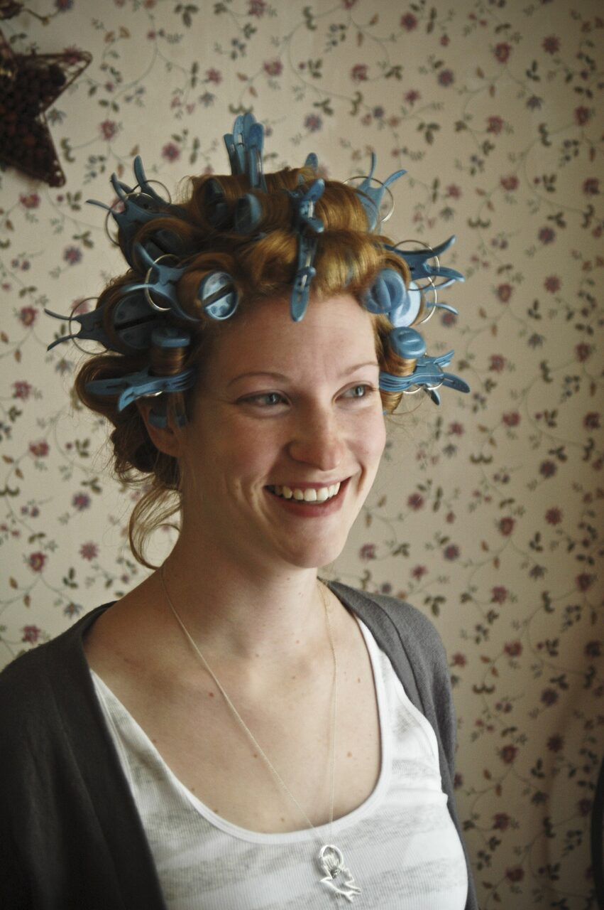

Come and get your shaitel done by Devora. Gentle wash and sets that bring your wig back to life - quick, careful, and always at a fair price.

A full wash and professional set that leaves your shaitel soft, fresh and styled to last.
A restyle on your already-clean shaitel - perfect before a simcha, Shabbat or a busy week.
First-time customers get a special welcome discount. Come try it once and see the difference.
Every shaitel is handled one on one, with attention to the way you like it worn.